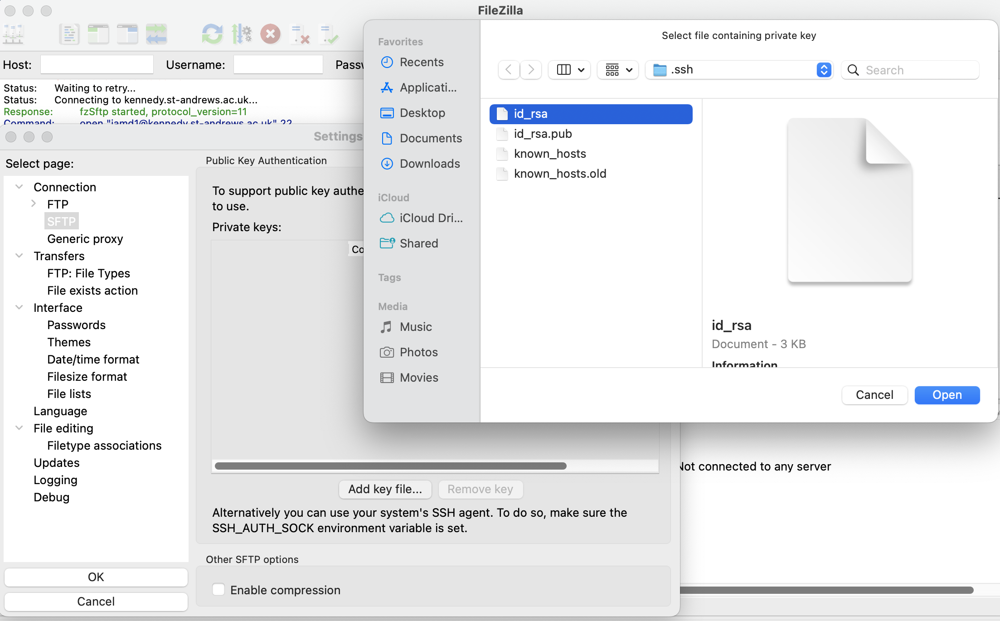
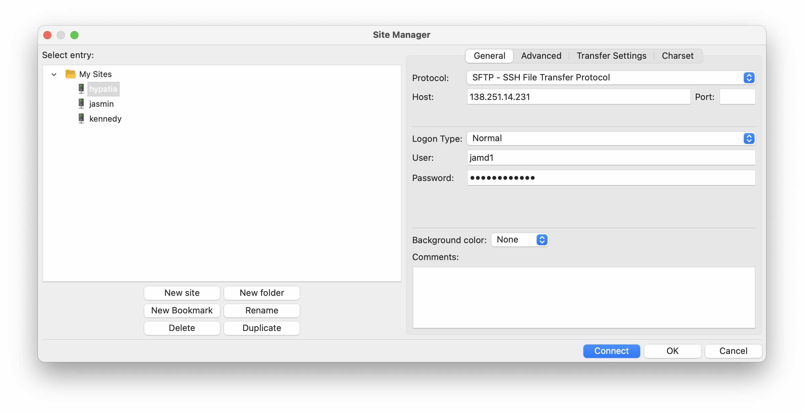
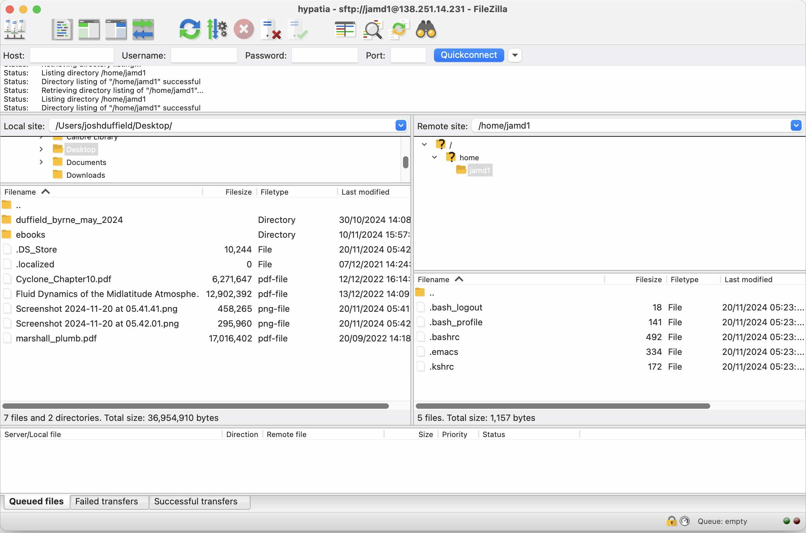
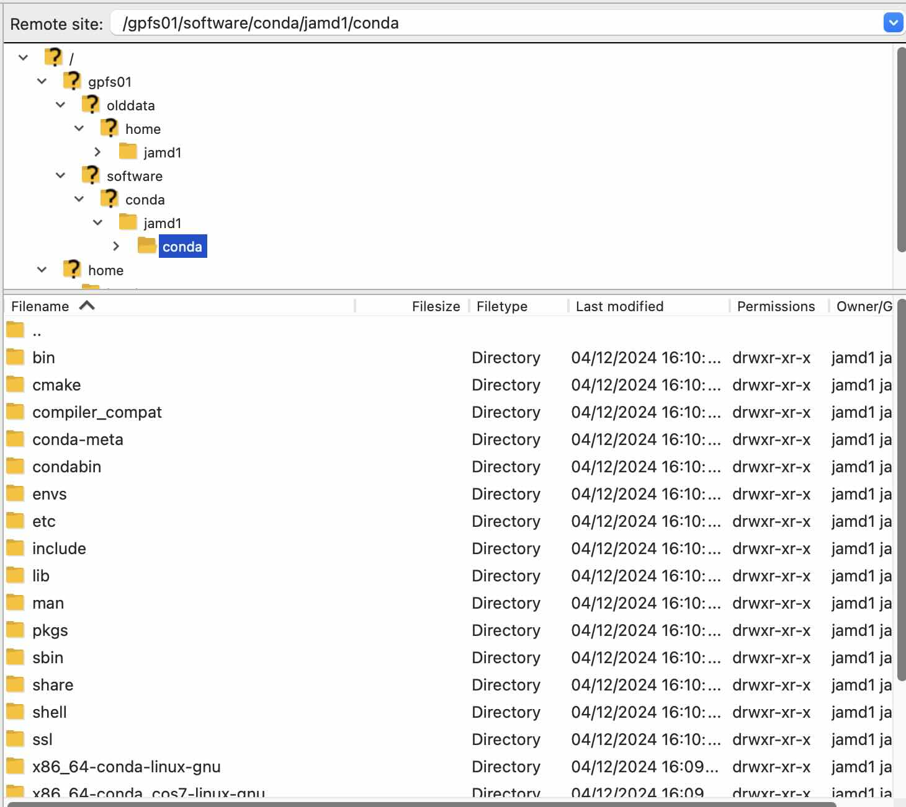

Hypatia
The following gives some instructions on how to get an account on the University of St Andrews HPC called hypatia, and then login (based on Mac OS).
Resources
-
There is a website for hypatia.
-
There is also a recorded lecture for the previous incarnation (kennedy).
-
Corresponding lecture notes.
These may be useful, especially if using an operating system other than Mac.
Getting an account
- Register for an account 🔗.
- Create a public ssh key.
- Follow these instructions.
- I would not enter a password and leave the folder as the default.
- You should have created a private key (id_rsa) and a public key (id_rsa.pub). For me, these were saved to /Users/user/.ssh/.
- Email the public key to Herbert (herbert.fruchtl@st-andrews.ac.uk) so he can make you an account.
- He should then email you a username and password.
Login
Username
Your hypatia username will probably be the same as your normal St Andrews one. In the following, I have left my username, jamd1, so just replace this wherever it appears with your username.
- Unless you are in a University building or a student hall, you need to connect to the St Andrews VPN.
- To login, run the following in terminal (the IP address may be replaced by a host name in the future).
ssh jamd1@138.251.14.231 - You may get the following message:
If so, just say
The authenticity of host can't be established. ED25519 key fingerprint is ... This key is not known by any other names Are you sure you want to continue connecting (yes/no/[fingerprint])?yes - Then it will call for the password:
jamd1@138.251.14.231's password:
If logged in successfully, the following should appear
H H Y Y PPP A TTTTT I A
HHH Y PPP A A T I A A
H H Y P A A T I A A
Current Queue setup:
small-short: 1 node, 24 cores, 2 days
small-long: 1 node, 24 cores, 30 days
large-short: multiple nodes, more cores (up to 168 per node), 2 days
large-long: multiple nodes, more cores (up to 168 per node), 30 days
gpu.L40S: \
gpu.A100: ) GPU nodes: 4 days. Request GPUs separately (see example job)
gpu.A30: /
Example batch jobs in
/software/examples
More information (including introductory lectures) at
https://www.st-andrews.ac.uk/high-performance-computing/
Welcome to the St Andrews HPC Resource
H H Y Y PPP A TTTTT I A
HHH Y PPP A A T I A A
H H Y P A A T I A A
Current Queue setup:
small-short: 1 node, 24 cores, 2 days
small-long: 1 node, 24 cores, 30 days
large-short: multiple nodes, more cores (up to 168 per node), 2 days
large-long: multiple nodes, more cores (up to 168 per node), 30 days
gpu.L40S: \
gpu.A100: ) GPU nodes: 4 days. Request GPUs separately (see example job)
gpu.A30: /
Example batch jobs in
/software/examples
More information (including introductory lectures) at
https://www.st-andrews.ac.uk/high-performance-computing/
cd null
SLURM: Your account, jamd1, is ready to submit Slurm jobs.
Info: Loaded slurm into the modular environment.
Info: Loaded lmod into the modular environment.
Change Password
On first login, the password should be changed using the command passwd:
[jamd1@login01(standrews) ~]$ passwd
Changing password for user jamd1.
Current Password:
New password:
Retype new password:
passwd: all authentication tokens updated successfully.
[jamd1@login01(standrews) ~]$
File Transfer
Using Terminal
You can exchange files between your local computer and hypatia using terminal:
sftp jamd1@138.251.14.231
jamd1@138.251.14.231's password:
Connected to 138.251.14.231.
sftp>
- Then use
cd <dir>to change directory put <file>to move file from local computer to hypatia.get <file>to move file from hypatia to local computer.
I find it easiest to exchange files using FileZilla which has a graphical interface.
- Download it from this website
-
Next, you need to specify the private key which was created earlier.
- In FileZilla, in the top bar, click Edit and then Settings.
- Then click Connection/SFTP and then Add key file.
- Select the private key created earlier i.e. it should be called id_rsa.
 - Then press OK

- This comes from the On a Mac section on the wiki.
-
Now, in the top bar, click File and then Site Manager
- Create a New Site for hypatia.
- Protocol: SFTP
- Host: 138.251.14.231
- Username and password is the same as used to login.
 - Then click Connect and it should hopefully work with a screen like the following appearing.

- You should now be able to drag and drop files from the local computer (left) to hypatia (right) and create new directories etc.
CONDA
Installation
To install CONDA, login and then run install-conda in terminal.
This should then produce some files in the location /gpfs01/software/conda/jamd1/conda:

Create Environment
To create a python 3.9 conda environment called test_env run:
conda create -n test_env python=3.9
conda activate test_env
(test_env) [jamd1@login01(standrews) ~]$
Error - Wrong Python Version
Error
If you now run python -V to check the python version, it will print Python 2.7.5 even though the conda
environment is python 3.9.
This is because it is using the wrong python. If you run which python, it will print /usr/bin/python which
has nothing to do with the test_env CONDA environment.
The problem is that the python installed using CONDA does not have execution permissions, so it reverts to
a python version which does. To give execution permissions, you can run the following line (The $USER will
automatically be your username so you don't need to change it):
chmod u+x /gpfs01/software/conda/$USER/conda/envs/*/bin/*
If you now run conda deactivate and then conda activate test_env to log out and then back into the CONDA
environment, python -V should now print Python 3.9.13 and which python should print
/gpfs01/software/conda/jamd1/conda/envs/test_env/bin/python.
In general, whenever you hit a Permission Denied error when using a CONDA environment, I would run
chmod u+x /gpfs01/software/conda/$USER/conda/envs/*/bin/* as a first attempt at fixing it.